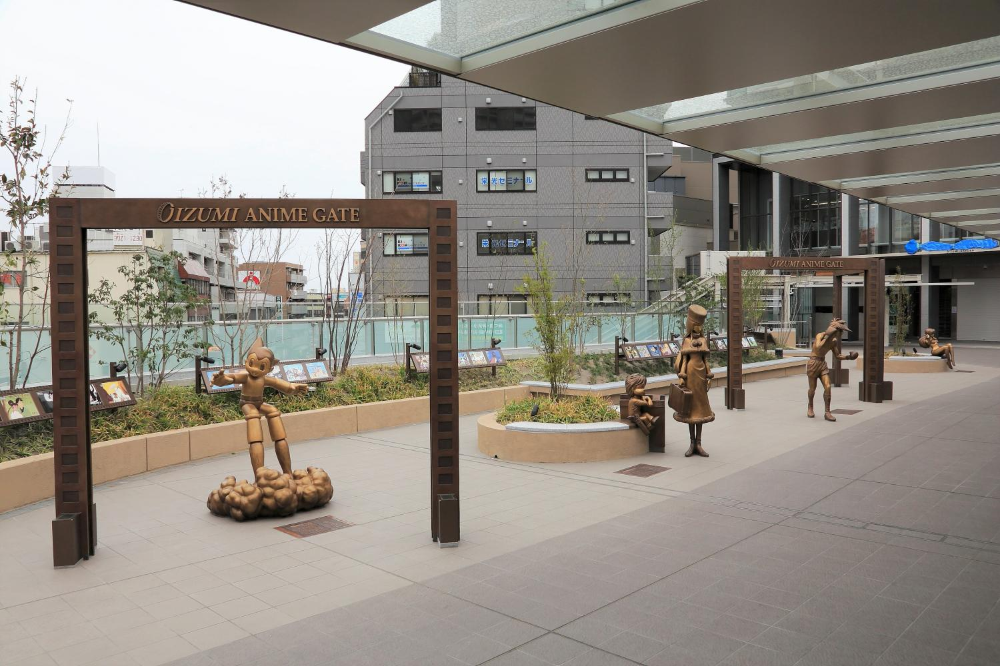
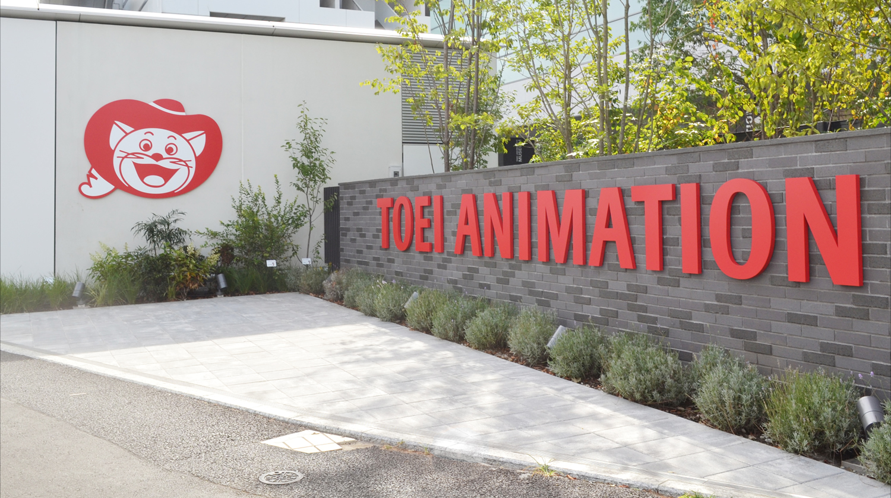
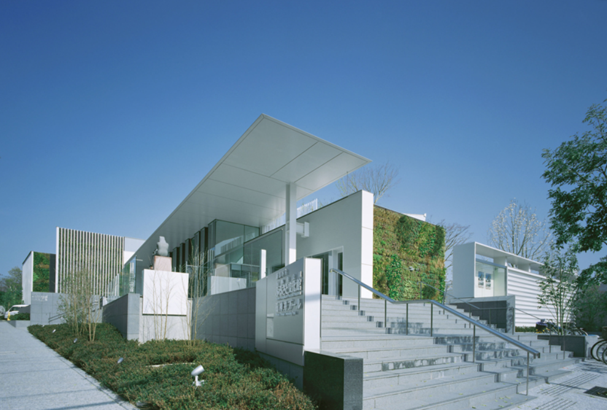
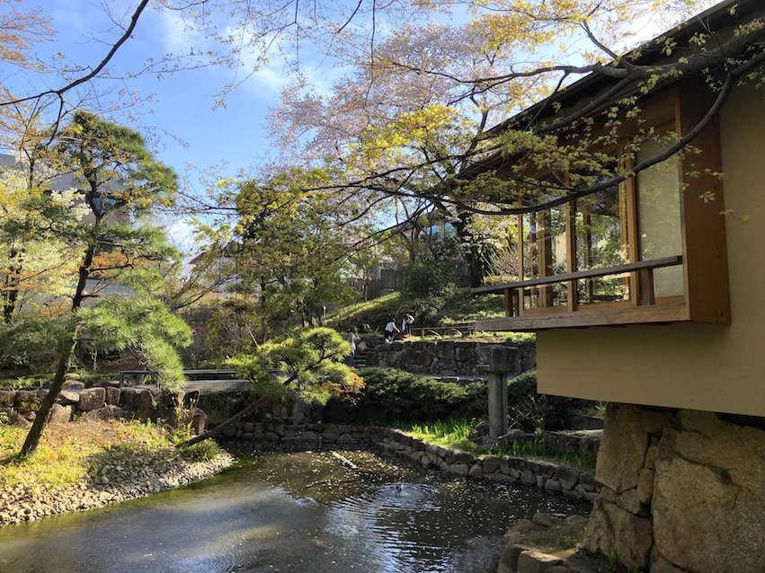
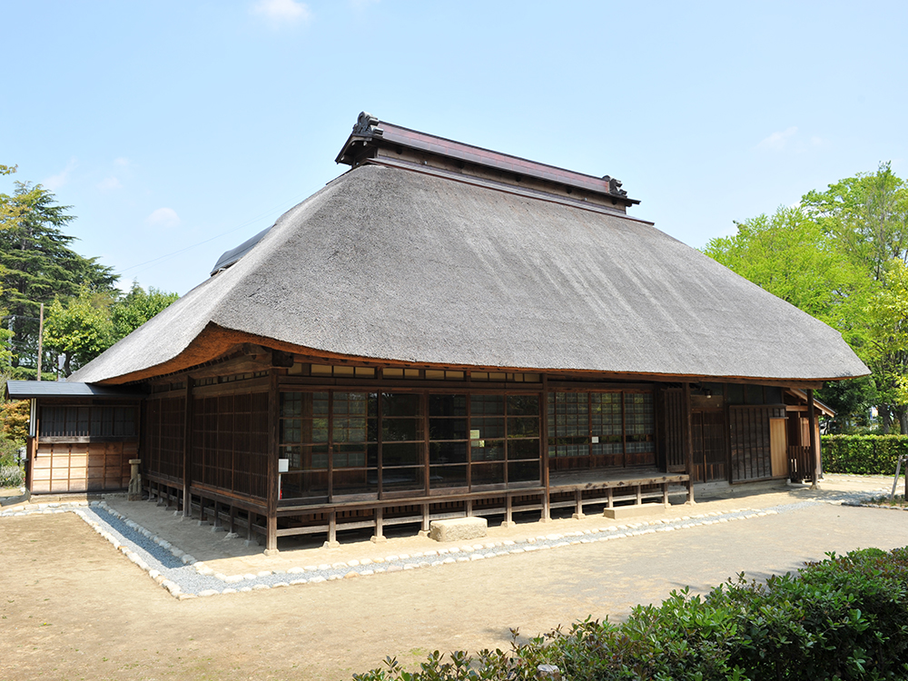
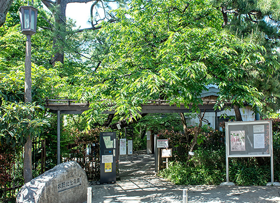
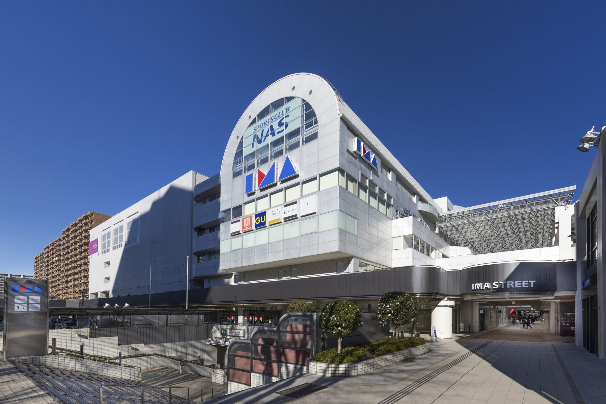
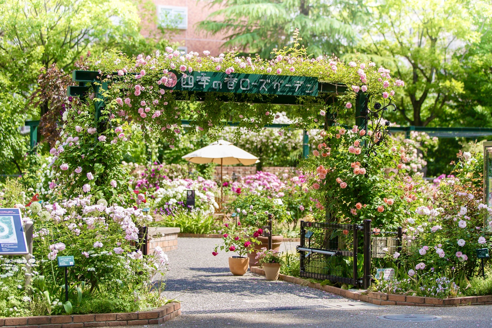
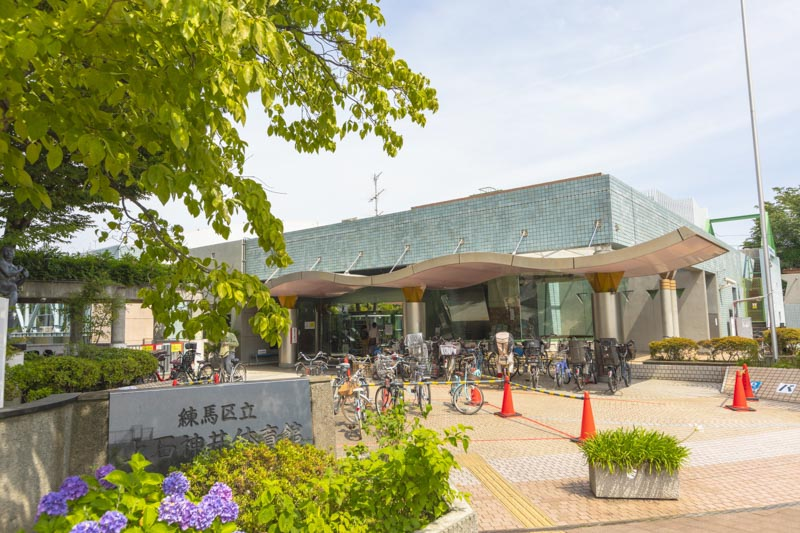

About
- 観光甲子園TeamA^5
- 観光甲子園出場チームとして設立
- 2022･2023観光甲子園に出場しました。
こちらのサイトでは私たちの地元である「練馬」の魅力を最大限お届けします‼
アニメコース
練馬は「アニメの発祥地」として知られています。
アニメコースでは練馬にあるアニメスポットを上空からも楽しむことができます！
- 
- 
- 
歴史コース
練馬は数多くの文化財を持つ歴史のある地域です。
歴史コースでは文化財を実際に見ていただきながら、音声ガイドでの歴史的背景のご説明も行っています。
- 
- 
- 
(牧野記念庭園の写真：練馬区提供)
ファミリーコース
練馬区は東京都23区で一番公園が多いです。
ファミリーコースではそれらの公園までの交通手段としてお使いください。
- 
- 
- 
(四季の香ローズガーデンの写真：練馬区提供)
News
- 2023/11/06
- teamA^5特設サイト 作成
- 2023/08/21
- 2023観光甲子園準決勝 進出
- 2023/05/28
- 2023アニメプロジェクトin大泉 商店街PR動画制作
- 2022/12/12
- 2022観光甲子園準決勝 敗退
- 2022/08/22
- 2022観光甲子園準決勝 進出
- 2022/06/21
- teamA^5 結成‼
Contact
お問い合わせは以下のフォームから